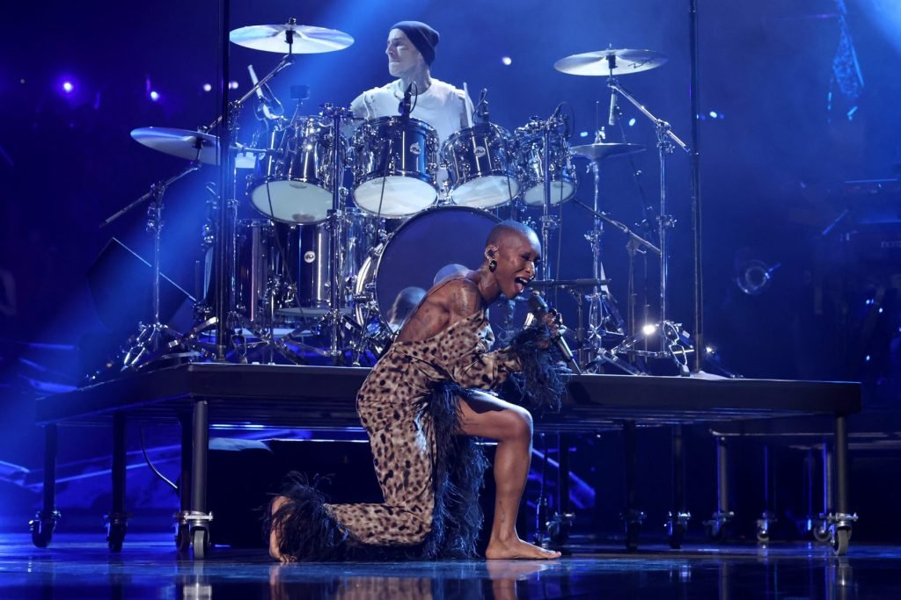
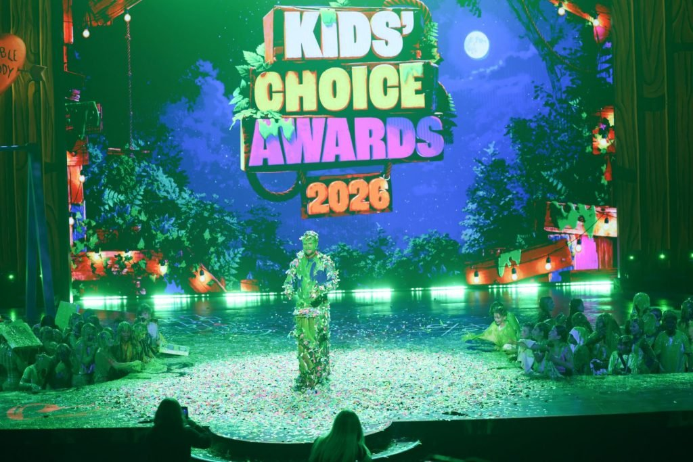
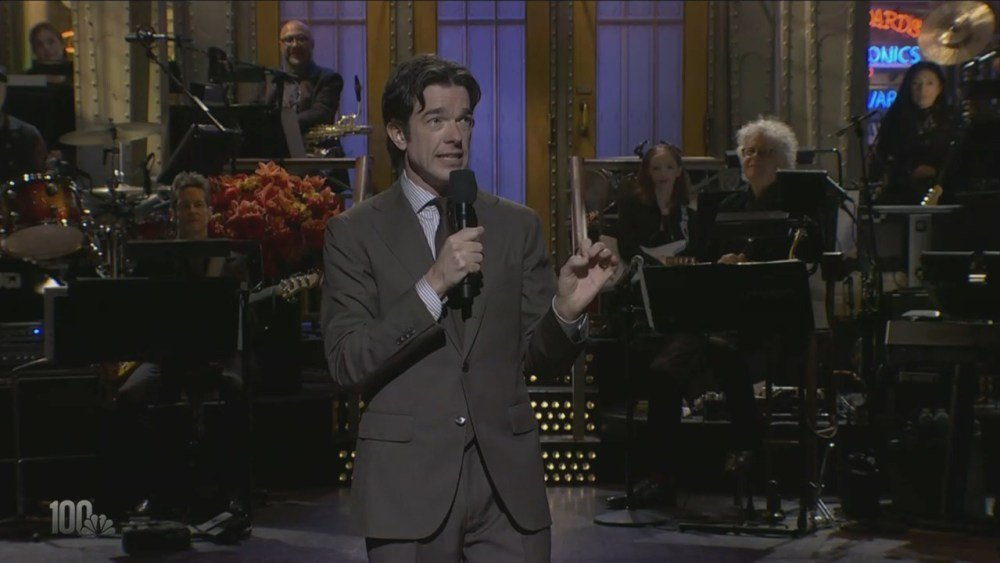

Phil Collins cries, U2 crashes the party, and Wu-Tang takes over at the Rock & Roll Hall of Fame

The Hall inducted its 18-member class of 2026 Saturday night at the Peacock Theater in Los Angeles. U2 weren’t on the bill, but they opened the show anyway, a day after releasing Carnaval de Luz. They played the new single “Silencio,” surrounded by dancers dressed as riot police, then “Pride (In the Name of Love).” Phil Collins, already in the Hall as a member of Genesis, was inducted for his solo career. He walked to the stage with two canes and cried at the ovation. “I’m really not as bad as it looks,” he said, and promised, “You haven’t heard the last of me.” Cynthia Erivo sang “In the Air Tonight” in his honor, with Travis Barker playing the famous drum break.
Chris Rock inducted Wu-Tang Clan: “Wu-Tang is for the children, Wu-Tang is forever, and now Wu-Tang is in the Rock & Roll Hall of Fame.” All nine living members came, and Ol’ Dirty Bastard’s son, Young Dirty Bastard, performed “Shimmy Shimmy Ya” for his late father. Oprah Winfrey inducted Luther Vandross and Usher sang his hits. Queen Latifah and MC Lyte performed together, Billy Idol played “Rebel Yell,” and Aerosmith and Run-DMC closed the night with “Walk This Way.” The show didn’t stream live this year. An edited version airs Dec. 9 on ABC and Disney+.
BTS and ROSÉ lead a K-pop sweep at the Kids’ Choice Awards

The Kids’ Choice Awards aired on CBS for the first time Saturday, in a simulcast with Nickelodeon hosted by Alex Warren. Billboard says the night belonged to K-pop. BTS won three awards: Favorite Music Group for a record-extending fifth time, Favorite Song for “SWIM” and Favorite Album for ARIRANG. They didn’t attend or send a video, and most of their wins weren’t shown on air. ROSÉ became the first K-pop star to win Favorite Female Artist, beating Ariana Grande, Taylor Swift and Miley Cyrus. Her Blackpink bandmate JENNIE shared Favorite Music Collaboration with Tame Impala for “Dracula.” Filipino girl group BINI won Favorite Global Music Star.
KPop Demon Hunters won three awards, including Favorite Song From a Movie for “Golden,” which beat Swift’s Toy Story 5 song. Spider-Man: Brand New Day won for both Tom Holland and Zendaya. Stranger Things and Percy Jackson and the Olympians won the TV categories, and Zootopia 2 won Favorite Animated Movie. Bruno Mars won Favorite Male Artist for the second year in a row, and Olivia Dean’s “Man I Need” won Favorite Viral Song. Chris Pratt got the King of Comedy blimp and a full-body sliming.
Listen on Spotify → · Billboard → · Hollywood Reporter winners list →
John Mulaney’s seventh SNL roasts tech CEOs and RFK Jr., and Phoebe Bridgers glows as a skeleton

Mulaney, a former SNL writer, hosted for the seventh time. The cold open had him as a CIA agent briefing tech bosses, including Peter Thiel, Sam Altman, Dario Amodei, Elon Musk and Mark Zuckerberg, on how to spot a woman who is “clearly a spy.” It played off the Nvidia scandal, and former cast member Bowen Yang returned to play Jensen Huang. Mulaney’s monologue included a long Robert F. Kennedy Jr. impression. Critics singled out the “Sister” sketch and Mulaney’s signature New York musical number, this time about the ban on Central Park horse carriages, with Yang as Mary Todd Lincoln from Oh, Mary! The A.V. Club called “Sister” the episode’s “instant classic.”
Phoebe Bridgers was the musical guest for the third time and played two songs from Lost Weekend. She opened “Bobby” with a scream on a smoke-covered stage. During “Still Standing,” her song about her late father, blacklight revealed skeleton makeup on her face and made her white lace dress glow. SNL is off for Thanksgiving and returns Dec. 5 with first-time host Amanda Seyfried and musical guest Don Toliver.
 Mulaney’s monologue on YouTube →
·
Mulaney’s monologue on YouTube →
·
 Bridgers, “Still Standing” (SNL) on YouTube →
·
Listen on Spotify →
·
Stereogum →
·
EW recap →
Bridgers, “Still Standing” (SNL) on YouTube →
·
Listen on Spotify →
·
Stereogum →
·
EW recap →
Bottom of the news
- Johnny Depp’s Ebenezer is set to win the weekend with about $20 million or a little less, per The Hollywood Reporter’s Saturday estimate. David Leitch’s How to Rob a Bank is heading for about $4.7 million on a $40 million budget.
- James Gray’s Paper Tiger, starring Adam Driver, Scarlett Johansson and Miles Teller, opened in six theaters to an estimated $203,000, an average of about $33,900 per screen.
- Joe Jonas and model Tatiana Gabriela have split after about a year together, according to Us Weekly, Page Six and TMZ.
- Killer Films co-founders Christine Vachon and Pamela Koffler receive the Thalberg Award at tonight’s Governors Awards. They’re the first female producing team and the first independent producers to get it.
- Filipino singer Carmelle won the first Eurovision Asia, held in Bangkok, with “Sobra-Sobra.”
- Stray Kids are taking their “RUN IT” tour to stadiums in North America and Europe in 2027, starting May 16 in Seattle.
- King Charles joked that he and Elton John are “still standing” in a clip for Elton’s Apple Music show, which aired on the king’s 78th birthday.
- Deadline says Lionsgate’s The Hunger Games: Sunrise on the Reaping, out next weekend, has a shot at a $100 million opening.